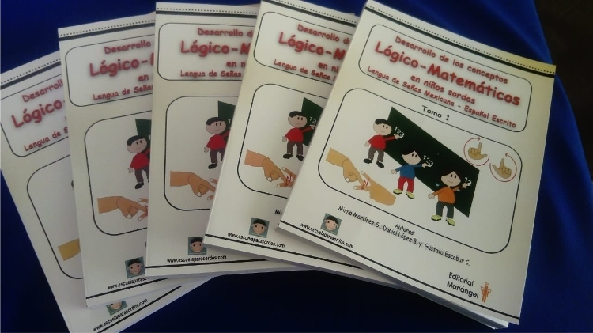

¿Quién es una persona Sorda?
Es la persona que tiene dificultades para oír. Puede ser que oiga un poquito o puede que no oiga ningún sonido. Las personas sordas tienen las mismas capacidades que los oyentes. Algunos sordos se comunican con lengua de señas y otros con lengua oral que en Colombia es el castellano o español.

¿Que es la lengua de señas?
La lengua de señas es la lengua natural de las personas sordas. Se basa en movimientos y expresiones a través de las manos, los ojos, el rostro, la boca y el cuerpo. Muchos sordos se comunican con esta lengua y requieren de un intérprete o persona que la maneje para relacionarse con oyentes que no la conocen. En Colombia se le llama Lengua de Señas Colombiana.

Producto de los libros de lengua de señas
Ver video